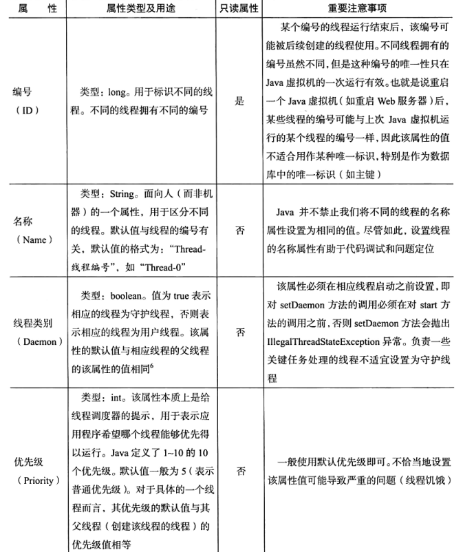
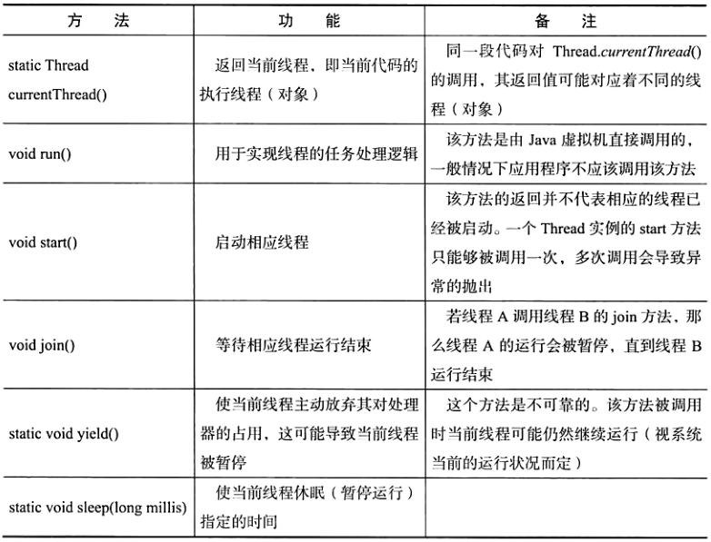
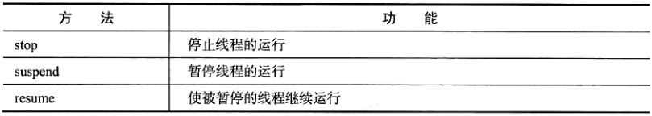
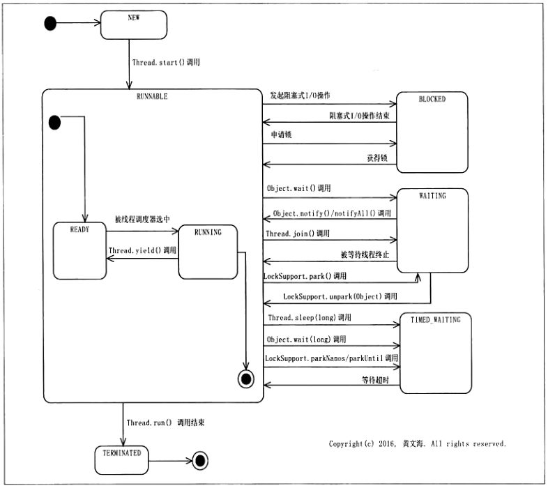

程序是一组指令的有序集合，也可以将其通俗地理解为若干行代码。它本身没有任何运行的含义，它只是一个静态的实体，它可能只是一个单纯的文本文件，也有可能是经过编译之后生成的可执行文件。
从狭义来说，进程是正在运行的程序的实例；从广义上来说，进程是一个具有一定独立功能的程序关于某个数据集合的一次运行活动。进程是操作系统进行资源分配的基本单位。
线程是进程中可独立执行的最小单位，它也是处理器进行独立调度和分派的基本单位。一个进程可以包含多个线程，每个线程执行自己的任务，同一个进程中的所有线程共享该进程中的资源，如内存空间、文件句柄等。
多线程编程技术是Java语言的重要特点。多线程编程的含义是将程序任务分成几个并行的子任务，并将这些子任务交给多个线程去执行。
多线程编程就是以线程为基本抽象单位的一种编程范式。但是，多线程编程又不仅仅是使用多个线程进行编程那么简单，其自身又有需要解决的问题。多线程编程和面向对象编程是可以相容的，即我们可以在面向对象编程的基础上实现多线程编程。事实上，Java平台中的一个线程就是一个对象。
现在的计算机动辄就是多处理器核心的，而每一个线程同一时间只能运行在一个处理器上。如果只采用单线程进行开发，那么就不能充分利用多核处理器的资源来提高程序的执行效率。而使用多线程进行编程时，不同的线程可以运行在不同的处理器上。这样一来，不仅大大提高了对计算机资源的利用率，同时也提高了程序的执行效率。
java.lang.Thread类就是Java平台对线程的实现。Thread类或其子类的一个实例就是一个线程。
在Java平台中，创建一个线程就是创建一个Thread类（或其子类）的示例。每个线程都有其要执行的任务。线程的任务处理逻辑可以在Thread类的run方法中直接实现或者通过该方法进行调用，因此run方法相当于线程的任务处理逻辑的入口方法，它应该由Java虚拟机在运行相应线程时直接调用，而不应该由应用代码进行调用。
运行一个线程实际上就是让Java虚拟机执行该线程的run方法，从而使任务处理逻辑代码得以执行。如果一个线程没有启动，它的run方法是绝对不会被执行的。为此，首先需要启动线程。Thread类的start方法的作用是启动相应的线程。启动一个线程的实质是请求虚拟机运行相应的线程，而这个线程具体何时能够运行是由线程调度器（线程调度器是操作系统的一部分）决定的。因此，调用线程的start方法并不意味着线程已经开始运行，这个线程可能马上开始运行，也有可能稍后才被运行，也有可能永远不运行。
下面介绍两种创建线程的方式（实际上还有其他方式，后续文章中会详细介绍）。在此之前我们先来看一下Thread类的run方法的源码：
// Code 1-1
@Override
public void run() {
if (target != null) {
target.run();
}
} 这个run方法是在接口Runnable中定义的，它不接受参数也没有返回值。事实上Runnable接口中也只有这一个方法，因此这个接口是一个函数式接口，这意味着我们可以在需要Runnable的地方使用lambda表达式。Thread类实现了这个接口，因此它必须实现这个方法。target是Thread类中的一个域，它的类型也是Runnable。target域表示这个线程需要执行的内容，而Thread类的run方法所做的也只是执行target的run方法。
我们刚刚提到，Java虚拟机会自动调用线程的run方法。但是，Thread类的run方法已经定义好了，我们没有办法将自己需要执行的代码放在Thread类的run方法中。因此，我们可以考虑其他的方式来影响run方法的行为。第一种就是继承Thread类并重写run方法，这样JVM在运行线程时就会调用我们重写的run方法而不是Thread类的run方法；第二种方法是将我们要执行的代码传递给Thread类的target方法，而刚好Thread类有几个构造器可以直接对target进行赋值，这样一来，JVM在调用run方法时执行的仍然是我们传递的代码。
在Java平台中，每个线程都可以拥有自己默认的名字，当然我们也可以在构造Thread类的实例时为我们的线程起一个名字，这个名字便于我们区分不同的线程。
下面的代码使用上述的两种方式创建了两个线程，它们要执行的任务很简单——打印一行欢迎信息，并且要包含自己的名字。
// Code 1-2
public class WelcomeApp {
public static void main(String[] args) {
Thread thread1 = new WelcomeThread();
Thread thread2 = new Thread(() -> System.out.println("2. Welcome, I'm " + Thread.currentThread().getName()));
thread1.start();
thread2.start();
}
}
class WelcomeThread extends Thread {
@Override
public void run() {
System.out.println("1. Welcome, I'm " + Thread.currentThread().getName());
}
}下面是这个程序运行时输出的内容：
1. Welcome, I'm Thread-0
2. Welcome, I'm Thread-1多次运行这个程序，我们可以发现这个程序的输出也有可能是：
2. Welcome, I'm Thread-1
1. Welcome, I'm Thread-0 这说明，虽然thread1的启动在thread2之前，但这并不意味着thread1会在thread2之前被运行。
不管采用哪种方式创建线程，一旦线程的run方法执行（由JVM调用）结束，相应线程的运行也就结束了。当然，run方法执行结束包括正常结束（run方法正常返回）和代码中抛出异常而导致的终止。运行结束的线程所占用的资源（如内存空间）会如同其他Java对象一样被JVM回收。
线程属于“一次性用品”，我们不能通过重新调用一个已经运行结束的线程的start方法来使其重新运行。事实上，start方法也只能够被调用一次，多次调用同一个Thread实例的start方法会导致其抛出IllegalThreadStateException异常。
线程的属性包括线程的编号、名称、类别和优先级, 详情如下表所示：

上面提到了守护线程和用户线程的概念，这里对它们做一个简要的说明。按照线程是否会阻止Java虚拟机正常停止，我们可以将Java中的线程分为守护线程（Daemon Thread）和用户线程（User Thread，也称非守护线程）。线程的daemon属性用于表示相应线程是否为守护线程。用户线程会阻止Java虚拟机的正常停止，即一个Java虚拟机只有在其所有用户线程都运行结束（即Thread.run()调用未结束）的情况下才能正常停止。而守护线程则不会影响Java虚拟机的正常停止，即应用程序中有守护线程在运行也不影响Java虚拟机的正常停止。因此，守护线程通常用于执行一些重要性不是很高的任务，例如用于监视其他线程的运行情况。
当然，如果Java虚拟机是被强制停止的，比如在Linux系统下使用kill命令强制终止一个Java虚拟机进程，那么即使是用户线程也无法阻止Java虚拟机的停止。
下面列出了Thread类中常用的方法：

Java中的任何一段代码总是执行在某个线程之中。执行当前代码的线程就被称为当前线程，Thread.currentThread()可以返回当前线程。由于同一段代码可能被不同的线程执行，因此当前线程是相对的，即Thread.currentThread()的返回值在代码实际运行的时候可能对应着不同的线程（对象）。
join方法的作用相当于执行该方法的线程和线程调度器说：“我得先暂停一下，等到另外一个线程运行结束后我才能继续。”
yield静态方法的作用相当于执行该方法的线程对线程调度器说：“我现在不急，如果别人需要处理器资源的话先给它用吧。当然，如果没有其他人要用，我也不介意继续占用。”
sleep静态方法的作用相当于执行该方法的线程对线程调度器说：“我想小憩一会儿，过段时间再叫醒我继续干活吧。”
由于Java虚拟机实现得有些问题，因此Thread类的有些方法已经被废弃了，在新写的代码中应该避免使用这些方法。部分废弃的方法如下表所示：

虽然这些方法并没有相应的替代品，但是可以使用其他办法来实现，我们会在后续文章中学习这部分内容。
Java平台本身就是一个多线程的平台。除了Java开发人员自己创建和使用的线程，Java平台中其他由Java虚拟机创建、使用的线程也随处可见。当然，这些线程也是各自有其处理任务。
Java虚拟机启动的时候会创建一个主线程（main线程），该线程负责执行Java程序的入口方法(main方法）。下面的程序打印出主线程的名称：
// Code 1-3
public class MainThreadDemo {
public static void main(String[] args) {
System.out.println(Thread.currentThread().getName());
}
} 该程序会输出“main”，这说明main方法是由一个名为“main”的线程调用的，这个线程就是主线程，它是由JVM创建并启动的。
在多线程编程中，弄清楚一段代码具体是由哪个（或者哪种）线程去负责执行的这点很重要，这关系到性能、线程安全等问题。本系列的后续文章会体现这点。
Java 虚拟机垃圾回收器（Garbage Collector）负责对Java程序中不再使用的内存空间进行回收，而这个回收的动作实际上也是通过专门的线程（垃圾回收线程）实现的，这些线程由Java虚拟机自行创建。
为了提高Java代码的执行效率，Java虚拟机中的JIT（Just In Time）编译器会动态地将Java字节码编译为Java虚拟机宿主机处理器可直接执行的机器码。这个动态编译的过程实际上是由Java虚拟机创建的专门的线程负责执行的。
Java平台中的线程随处可见，这些线程各自都有其处理任务。
Java平台中的线程不是孤立的，线程与线程之间总是存在一些联系。假设线程A所执行的代码创建了线程B, 那么，习惯上我们称线程B为线程A的子线程，相应地线程A就被称为线程B的父线程。例如， Code 1-2中的线程thread1和thread2是main线程的子线程，main线程是它们的父线程。子线程所执行的代码还可以创建其他线程，因此一个子线程也可以是其他线程的父线程。所以，父线程、子线程是一个相对的称呼。理解线程的层次关系有助于我们理解Java应用程序的结构，也有助于我们后续阐述其他概念。
在Java平台中，一个线程是否是一个守护线程默认取决于其父线程：默认情况下父线程是守护线程，则子线程也是守护线程；父线程是用户线程，则子线程也是用户线程。另外，父线程在创建子线程后启动子线程之前可以调用该线程的setDaemon方法，将相应的线程设置为守护线程（或者用户线程）。
一个线程的优先级默认值为该线程的父线程的优先级，即如果我们没有设置或者更改一个线程的优先级，那么这个线程的优先级的值与父线程的优先级的值相等。
不过，Java平台中并没有API用于获取一个线程的父线程，或者获取一个线程的所有子线程。并且，父线程和子线程之间的生命周期也没有必然的联系。比如父线程运行结束后，子线程可以继续运行，子线程运行结束也不妨碍其父线程继续运行。
在Java平台中，一个线程从其创建、启动到其运行结束的整个生命周期可能经历若干状态。如下图所示：

线程的状态可以通过Thread.getState()调用来获取。Thread.getState()的返回值类型Thread.State，它是Thread类内部的一个枚举类型。Thread.State所定义的线程状态包括以下几种：
一个线程在其整个生命周期中，只可能有一次处于NEW状态和TERMINATED状态。
多线程编程具有以下优势：
多线程编程也有自身的问题与风险，包括以下几个方面: